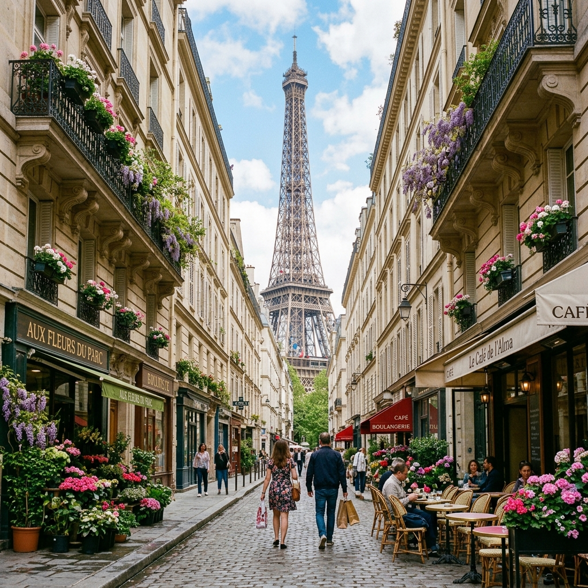

Франция
Проверим вашу ситуацию, объясним порядок подачи и поможем подготовить документы.
Стоимость услуг — по индивидуальному расчёту
Сборы и срок рассмотрения зависят от страны, категории визы и условий подачи. Решение принимает консульство.

Что подготовить для консультации
- Заграничный паспорт и сведения о заявителе.
- Предполагаемые даты, маршрут и цель поездки.
- Документы по индивидуальному списку после консультации.
Для первой консультации не отправляйте сканы паспорта и платёжные реквизиты через форму. Менеджер подскажет дальнейший порядок.
Прайс и список документов со старого сайта · 26.11.2025
Это материалы предыдущего сайта на указанную дату. Стоимость, сборы и правила въезда могли измениться. До оплаты и подачи подтвердите актуальные условия у менеджера.
Оформить шенген с нами просто!
Оформление визы во Францию в Краснодаре и Сочи!
Кто может получить визу в 2026 году?
Франция выдает все типы виз. Страна открыта для любых целей поездки.
Если Вы НЕ сдавали отпечатки пальцев за последние 4 года и 6 месяцев:
Подача личная в гор. Москва, Ростов-на-Дону, Краснодар или любом удобном Вам визовом центре.
Стоимость консультации и подготовки документов – 8500 р.
Отдельно при подаче оплачиваются консульский сбор и сервисный сбор визового центра ~13000 руб.
Если Вы
сдавали отпечатки пальцев за последние 4 года и 6 месяцев:
мы можем оформить визу без Вашего присутствия, по нотариальной доверенности на нашего сотрудника.
Стоимость 26900 руб. , все сборы включены, за исключением записи ботом и страховки.
Чтобы оформить визу во Францию и получить список документов в зависимости от цели вашей поездки, вы можете:
-написать нам на почту
vivastravel@gmail.com
-позвонить по телефону
+79628538393
-
Связаться в WhatsApp
Список основных документов для оформления визы во Францию:
1. Опросник на шенгенскую визу с нашего сайта, заполненный разборчиво на русском языке.
Скачать опросник на визу Word (817 downloads)
Скачать опросник на визу PDF (675 downloads)
2. Действующий загранпаспорт с двумя чистыми страницами,срок действия которого должен перекрывать на 90 дней срок планируемой поездки и оригинал аннулированного загранпаспорта, если в нем есть шенгенские визы за последние 5-6 лет.
3.Копии всех страниц общегражданского паспорта.
4. Две цветных фотографии 35х45 мм на
сером
фоне, не старше 6 месяцев, размер головы от макушки до подбородка 31-33 мм
(делаем в офисе).
5. Медицинская страховка путешественника на весь период предполагаемой поездки, действительная во всех странах Шенгена и покрывающая любые расходы, которые могут возникнуть в связи с возвращением на родину по медицинским показаниям, необходимостью оказания срочной медицинской помощи, срочного лечения в стационаре или смертью в период поездки. Минимальная страховая сумма — €30.000
(можно оформить у нас в офисе).
6. Справка 2-НДФЛ или справка с места работы ( должна быть распечатана на бланке компании и содержать следующую информацию: адрес и номера телефонов работодателя, позиция сотрудника в компании, месячный заработок, с какого времени сотрудник работает в компании, подтверждение предоставления отпуска или командировки). Для тех, кто работает у ИП, дополнительно к справке с работы прикладывается ксерокопия свидетельства о внесении в ЕГРИП (сотрудники, работающие у Индивидуальных предпринимателей, зарегистрированных в реестре Индивидуальных предпринимателей после 01.01.17г., предоставляют лист записи в ЕГРИП) или выписку из ЕГРИП
- Для пенсионеров: копия пенсионного удостоверения
- Для студентов и школьников:
копия студенческого билета и справку с места учебы с печатью и подписью декана факультета. Для оформления пакета документов на получение визы справка действительна в течение месяца, начиная с даты подписания на дату подачи документов.
- Для индивидуальных предпринимателей: копии свидетельств ИНН и ОГРН
- Самозанятые предоставляют справку из Налоговой службы о состоянии расчетов (доходах) по НПД за текущий/предыдущий год.
-Безработные предоставляют документы, подтверждающие связь с Российской Федерацией (н-р, данные о семейном положении, свидетельство о государственной регистрации права и т.д.), а также копии страницы трудовой книжки, содержащей персональные данные, и страниц, сообщающих о роде деятельности в течение как минимум последних 3 лет (если применимо).
6.1. Для всех: необходимо предоставить Сведения о трудовой деятельности, предоставляемые из Фонда пенсионного и социального страхования Российской Федерации за последние 10 лет. Документ должен быть сопровожден цифровой подписью (документ можно скачать на ГосУслугах)
7. Подтверждение достаточного количества денежных средств (справка из банка об остатке на счете из расчета 70 евро/день пребывания) .
В справке из банка обязательно должны быть прописаны телефон и адрес банка. Наличные деньги, кредитные карты и их копии, чеки из банкоматов, справки об обмене валюты и дорожные чеки не принимаются!
Допускаются справки с кредитных карт и также с расчетного счета ИП.
В случае недостаточного размера собственных средств, заявление спонсора о принятии на себя всех расходов, также необходимо приложить копию паспорта спонсора, его справку с работы, справку из банка и копию документа, подтверждающего родство с заявителем).
Спонсором может выступать только близкий родственник!!!
Справки должны быть не старше 90 дней на момент подачи документов!!!
8. Подтверждение о бронировании билета на самолет или, в случае поездки на поезде или автобусе, копию билета или подтверждения о бронировании билета на поезде или автобусе.
9. Для поездок на автомобиле: копия водительских прав и свидетельства о регистрации ТС, а также зеленая страховая карточка, действующая на весь период поездки.
10. Для детей –ОРИГИНАЛ и копия свидетельства о рождении ребенка.
11. Для въезда детей, путешествующих без сопровождения родителей ( или в сопровождении одного из родителей) требуется нотариально заверенное согласие на выезд от родителей( или от одного родителя) +копии паспортов родителей(страница с личными данными и пропиской)и копия паспорта лица, на которого оформлено согласие.
В согласии обязательно должна быть прописана фраза «…..во Францию и другие страны Шенгенского соглашения».
Дополнительные документы в зависимости от цели поездки:
Туризм:
- Подтверждение о бронировании гостиницы, содержащее следующую информацию: название, адрес и номер телефона гостиницы, а также имена и фамилии всех заявителей на латинице(как в загранпаспорте)
или иные подтверждения проживания
- договор найма жилья
- письмо от турагента с описанием тура
- документ, подтверждающий право собственности. Особые случаи: граждане РФ и иностранные граждане, владеющие недвижимостью, но не проживающие во Франции на постоянной основе, могут предоставить док-ты для проживания своих гостей (рукописное приглашение и копия документа, подтверждающего право собственности).
Частные визиты:
- приглашение «Attestation d’accueil» от гр-на Франции
или написанное от руки приглашение* (от гр-на РФ, легально пребывающего во Франции (более 3 месяцев-предоставить копию вида на жительство или долгосрочной визы) для супругов, детей, родителей, бабушки/дедушки, внуков + документы, подтверждающие родственную связь).
*
Для иностранных гр-н (только для гр-н РФ или ЕС), проживающих во Франции и приглашающих близких родственников — шаблон приглашения “lettre d’invitation”, подписанный принимающей стороной. — Если принимающей стороной является гр. Франции, проживающий в РФ, необходимо предоставить копию консульской карты и подтверждение наличия жилья во Франции
Деловая поездка:
Проживание гарантируется: бронью гостиницы на имя заявителя или подтверждением проживания в официальном приглашении от принимающей стороны(обязательно с названием отеля и его контактными данными).
для скорейшей записи на подачу мы пользуемся помощью бота, цену на него уточняйте у наших менеджеров
Для всех типов виз нужны фото и медицинская страховка.
Все это вы можете сделать у нас в офисе.
Информация о Франции
Столица: Париж
Время: Московское -2 часа
Код страны: +33
Валюта: евро
Французская Республика — государство в Западной Европе. Омывается Атлантическим океаном и Средиземным морем. Граничит с Бельгией, Люксембургом, Германией, Швейцарией, Италией, Монако, Испанией и Андоррой. Кроме того, Франция имеет территории в Северной и Южной Америке, Вест-Индии, Индийском и Тихом океане и в Антарктиде.
Западный и северный районы Франции равнинные, в центре и на востоке - средневысотные горы Центрального Французского массива, Вогезов и Юры. Юго-западную границу образуют высокие Пиренеи, а на юго-востоке - Альпы, самые высокие горы Западной Европы.
Таможня
Ввоз и вывоз валюты не ограничен. При въезде с территории стран, не входящих в ЕС, суммы свыше 10 000 EUR подлежат обязательному декларированию. Разрешен беспошлинный ввоз 200 сигарет, литра крепкого алкоголя, двух литров напитков крепостью менее 22 °, двух литров вина, 50 гр духов, 250 гр туалетной воды, 500 гр кофе и 100 гр чая.
Запрещен ввоз и вывоз наркотиков, предметов, имеющих историческую ценность, оружия и боеприпасов, а также животных и растений, внесенных в список исчезающих видов. При перевозке животных необходима справка о прививках, а также медицинская справка на французском языке, выданная не раньше, чем за пять дней до отъезда.
Транспорт Франции
Самый популярный и удобный вид междугороднего транспорта — поезда. Дальние расстояния имеет смысл покрывать на высокоскоростных поездах TGV — билеты недешевы, зато выгода во времени и комфорт в поездке налицо. Прочие поезда — пригородные электрички TER, межрегиональные Intercite и ночные Lunea. Билеты рекомендуется бронировать заранее, особенно это относится к TGV в высокий сезон.
Авиасообщение развито в стране «на пять»: аэропорты имеются в абсолютном большинстве крупных и средних городов. Приятный бонус — наличие лоу-костов, позволяющих неплохо экономить.
Чуть ли не единственный вид транспорта на горнолыжных курортах Франции — это ски-бас, с местным лыжным абонементом проезд на них бесплатный. Кроме того, в некоторых местечках есть возможность путешествовать на гужевом транспорте с конной тягой: санях и упряжках.
Городской транспорт большинства городов Франции — это автобусы, иногда трамваи и пригородные поезда. Плюс, разумеется, такси, у которых здесь два тарифа: тариф «А» (0,61 EUR за км) действует с понедельника по субботу с 7:00 до 19:00, а тариф «Б» (3 EUR за км) действует в выходные и праздничные дни, а также ночью. Посадка — только на специальной стоянке (или заказ такси по телефону). Посадка в такси стоит 2,5 EUR, каждое место багажа — 1 EUR. Минимальная плата за проезд — 6,10 EUR. Можно попробовать голосовать, но свободных машин мало.
Путеводитель по Франции
Банки и обменные пункты
Банки открыты с понедельника по субботу с 9.00 до 12.00 и с 14.00 до 17.00. Накануне выходных и праздничных дней банки закрываются рано (обычно в полдень), иногда они не работают и весь день после праздника. В Париже банковские офисы обычно открыты по будням с 10.00 до 17.00 или с 9.30 до 16.00, закрыты в субботу, воскресенье и в праздничные дни. В провинции банки работают со вторника по субботу. Перерыв, как правило, с 13.00 до 15.00, в канун праздников также закрываются раньше обычного. Пункты обмена валюты работают ежедневно с 9.00 до 18.00, выходной - воскресенье.
Обмен денег можно произвести в банках, обменных пунктах (bureaux de change, расположены на вокзалах, в аэропортах, туристических офисах и на центральных улицах большинства крупных городов, в провинции почти не встречаются), в большинстве транспортных агентств, гостиниц и турбюро. Согласно местному законодательству магазины и гостиницы не имеют права принимать в качестве оплаты иностранную валюту. Обменные пункты банков обязательно имеют уведомительный анонс снаружи. Курс обмена и комиссия в каждом банке различные - часто офис декларирует свободный (без комиссии) обмен валюты, компенсируя его низким обменным курсом, или наоборот. Почтовые отделения также могут обменивать валюту и обналичивать трэвел-чеки и иногда предлагают даже лучший курс обмена, чем крупные банки. Обменные пункты в аэропортах, отелях и на вокзалах предлагают не самый выгодный курс, плюс обычно берется определенный фиксированный процент за операцию, но часы их работы весьма удобны. Обмен долларов США в последнее время значительно затруднен - большинство обменных пунктов берет за операции с ними до 8-15% комиссионных, хотя это нигде не указано.
Самый дешевый и удобный способ обмена валюты во Франции - через банкоматы (здесь их принято обозначать DAB, Distributeur, или Point argent), которые обычно принимают карты всех крупных международных платежных систем и банковские карточки. Обычно рекомендуется использовать кредитную карту для покупок, а дебетовую - для получения наличных денег в банкомате, однако это правило не универсально, поэтому нужно советоваться об условиях обслуживания международных карт с работниками банков на месте. Так как операционная плата взимается практически за все действия с картой, более эффективно снимать разово крупные суммы вместо множества мелких изъятий. Многие местные банкоматы работают только с четырехзначными PIN-кодами и часто не способны осуществлять операции сразу с несколькими счетами (особенно зарубежными), поэтому перед поездкой лучше проконсультироваться об условиях обслуживания карты в офисе банка-эмитента.
Почти все магазины, рестораны и гостиницы принимают в качестве оплаты французские (чипованные) карты и их зарубежные аналоги (Visa и Mastercard принимаются повсеместно, American Express обычно обслуживается только в высококлассных заведениях). Французские банковские карты имеют специальный смарт-чип, позволяющий мгновенно идентифицировать предъявителя карты и состояние его счета, поэтому многие банки и заведения предпочитают работать именно с такими картами. Да и многие торговые автоматы (билетные, транспортные и т. д.) практически повсеместно принимают к оплате только карты с микрочипом. Кроме того, большинство кассиров настолько привыкли к своей системе, что могут просто не знать, что иностранные Visa или Mastercard должны быть прокатаны, а клиент расписаться на чеке (в то время как для большинства карт, эмитированных в самой Франции, применяется ввод клиентом PIN-кода вместо подписи на чеке). Некоторые небольшие заведения к тому же не принимают иностранные (без чипа) карты вовсе или работают с ними только в пределах определенной суммы.
Шоппинг и магазины Франции
Магазины открыты ежедневно, кроме воскресенья, с 10:00 до 19:00. На горнолыжных курортах — с 10:00 до 12:00 и с 16:00 до 20:00, по выходным они работают только в «высокий» сезон.
В Париже бутики знаменитых домов моды находятся на проспекте Монтеня и на улице Фобур-Сент-Оноре. Самыми популярными местами для покупок являются знаменитые «Галереи Лафайет» и «Прентан» (они находятся рядом с площадью Опера).
Из Франции обычно привозят вино, сыры, предметы высокой моды, парфюмерию и косметику, антикварные безделушки и всевозможные брелоки, статуэтки и прочие сувениры с изображением знаменитой башни, вызывавшей когда-то такое отвращение у Ги де Мопассана.
Кухня и рестораны
Французская кухня с ее способностью изысканно сочетать несочетаемое и разглядеть гастрономический «материал» в самых неподходящих для этого продуктах (мы о лягушачьих лапках), определенно заслуживает пристального внимания. Каждый регион страны внес в общую кулинарную «копилку» посильный вклад: район Рона — Альпы, например, славится запеканкой из тонких ломтиков картофеля «гратан дофинуа», а в центральных Альпах как нигде готовят фондю. Восстановить силы после напряженного лыжного дня поможет тарелка «буйябеса» — марсельского «мультирыбного» супа, прекрасно прижившегося на снежном севере.
Заведений общепита во Франции великое множество: брассерии и бистро, креперии (блинные) и кафетерии всех мастей. Ресторан — традиционно место «высокой кухни» и вдумчивой трапезы — с соответствующими цифрами в меню.
Время обеда в ресторанах — с 12:00 до 15:00, ужина — с 19:00 до 23:00. В остальное время там обычно предлагают холодные закуски. В кафе и барах обычно указывают две цены: «au comptoir» (у стойки) и «а salle» (за столом). Первая, разумеется, всегда ниже.
Развлечения, экскурсии и достопримечательности
Франция – удивительная страна со своим особенным очарованием и неотразимым шармом. Это страна с богатейшим культурным наследием и огромным количеством исторических и архитектурных памятников различных эпох и цивилизаций, а также великолепными природными ландшафтами и прекрасным климатом. Здесь вас ждут великолепные дворцы и замки, потрясающей красоты соборы, именитые музеи, Лазурный берег и заснеженные Альпы, а также знаменитая французская кухня и изысканные вина.
Особой популярностью среди туристов пользуется и долина Луары, издавна известная своими прекрасными виноградниками и величественными замками. Среди огромного количества настоящих шедевров замковой архитектуры стоит отметить замки Шамбор, Шеверни, Шенонсо, Вилландри, Сюлли-сюр-Луар, Блуа, Бриссак, Амбуаз, Плесси-Бурре, Валансе, Жьен и Монжоффруа. Также стоит посетить один из самых известных средневековых монастырей Франции - аббатство Фонтевро и Парк развлечений Пюи-дю-Фу.
Славится Франция и огромным количеством прекрасных храмов, среди которых многие являются важными историческими и архитектурными памятниками. Наибольший интерес представляют Шартрский собор, Реймский собор, Леринское аббатство (на острове Сент-Онора близ побережья Канн), аббатство Святой Магдалины (городок Везле), Аббатство Сен-Савен-сюр-Гартамп, а также собор Святого Петра в Бове, Амьенский собор, собор Святого Стефана в Бурже, Страсбургский собор и Нотр-Дам-дю-Пюи в Грассе.
Среди обилия и многообразия достопримечательностей Франции стоит также отметить древнеримский акведук Пон-дю-Гар (на реке Гардон), остров-аббатство Мон-Сен-Мишель, Папский дворец в Авиньоне, Королевскую солеварню в Арк-э-Сенан, крепость Каркассон, Римский театр и триумфальную арку в городе Оранж, римские и романские памятники Арля, а также один из важнейших памятников эпохи палеолита пещеру Ласко.
Впрочем, каждый уголок этой удивительной страны интересен по-своему и не оставит равнодушным даже самого искушенного путешественника. Массу впечатлений вы получите познакомившись с историей и достопримечательностями таких прекрасных французских городов как Марсель, Лион, Страсбург, Авиньон и Ницца. Не меньший интерес представляют и города Ла-Рошель, Ле-Бо-де-Прованс, Руан, Риквир, Бордо, Нанси, Сарла, Анже и Лурд.
Погода Франции
Климат умеренный морской, на востоке переходный к континентальному, на Средиземноморье - субтропический. Лето достаточно жаркое, зима мягкая и довольно сырая, хотя снег идет редко. Наиболее благоприятное время для посещения Парижа - май и сентябрь-октябрь, Ривьеры - сентябрь. Горные районы имеют свой микроклимат.
Погода в Париже
Погода в Монпелье
Погода в Марселе
Погода в Гренобле
Погода в Дюнкерке
Gismeteo
Прогноз на 2 недели
Шаблоны документов
Образец согласия на вывоз ребенка (
21 kB
)
Скачать опросник на визу (
59 kB
)
Образец справки с работы (
21 kB
)
Образец спонсорского заявления (
24 kB
)
Как мы работаем
- Обсуждаем поездку и проверяем требования к въезду.
- Согласовываем состав услуги, стоимость и список документов.
- Помогаем с подготовкой и порядком подачи.